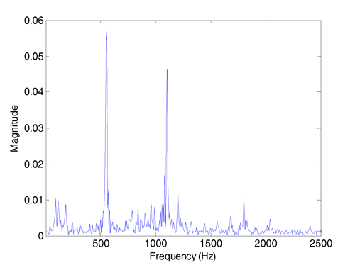

Adaptive Vibration Rejection
Adaptive Audio-Vibration Rejection
With the ever increasing demand of HDD applications in multimedia environments, external vibrations generated from sounds and environments are becoming a dominating source of the position error signal (PES) in various HDD products. These audio vibrations from, e.g., the computer/TV speakers, contaminate the HDD servo performance by introducing strong and wide peaks to the PES spectrum. Such band-limited disturbances (disturbances whose spectrum are largely contained in multiple narrow or wide bands) differ in products and can additionally be time dependent. This research aims at designing an adaptive feedback control algorithm (without using additional sensors) for audio-vibration compensation.
Adaptive Compensation for Multiple Narrow-Band Disturbances
Narrow-band disturbances show up as spikes in the PES spectrum (see one example in Fig. 1). The sources of the narrow-band disturbances in HDD include track eccentricity (or repeatable runout), disk modes, and external vibrations. Since the frequencies of the narrow-band disturbances are often unknown, adaptive control is required for effective rejection of the disturbances. We have developed indirect and direct adaptive control schemes to compensate for single and multiple narrow-band disturbances to improve the servo performance in track following.

Figure 1: A typical frequency spectrum of the Position Error Signal
Advantages of the proposed compensation include:
- it requires the minimal amount of adaptation parameters
- it optimally rejects multiple spectral peaks
- it is a flexible loop-shaping tool that maintain the achieved baseline servo performance and can reject vibrations much at frequencies higher than the bandwidth of the servo loop
The deterministic case of the algorithm has also been successfully verified via experiments on a laboratory setup of an industrial wafer-stage system and a variable-gear-ratio based electrical power steering system.
Related Publications
- X. Chen and M. Tomizuka, “An Indirect Adaptive Approach to Reject Multiple Narrow-Band Disturbances in Hard Disk Drives,” in Proceedings of the 2010 IFAC Symposium on Mechatronic Systems, Cambridge, MA, Sept. 13-Sept. 15, 2010, pp. 44-49.
- X. Chen and M. Tomizuka, “Unknown Multiple Narrow-Band Disturbance Rejection in Hard Disk Drives–an Adaptive Notch Filter and Perfect Disturbance Observer Approach,” in Proceedings of the 2010 ASME Dynamic Systems and Control Conference, Cambridge, MA, Sept. 13-Sept. 15, 2010, Vol.1, pp. 963-970.
- X. Chen and M. Tomizuka, “A Minimum Parameter Adaptive Approach for Rejecting Multiple Narrow-Band Disturbances With Application to Hard Disk Drives,” IEEE Transactions on Control Systems Technology, vol. 20, no. 2, pp. 408-415, Mar. 2012.
- X. Chen and M. Tomizuka, “Optimal Plant Shaping for High Bandwidth Disturbance Rejection in Discrete Disturbance Observers,” in Proceedings of the 2010 American Control Conference, Baltimore, MD, Jun. 30-Jul. 02, 2010, pp. 2641-2646.
- X. Chen and M. Tomizuka, “A Structure for all Stabilizing Controllers and its Applications to Narrow-band Disturbance Rejection in Hard Disk Drives,” in 21th ASME Annual Conference on Information Storage & Processing Systems 2011, SE-A5.